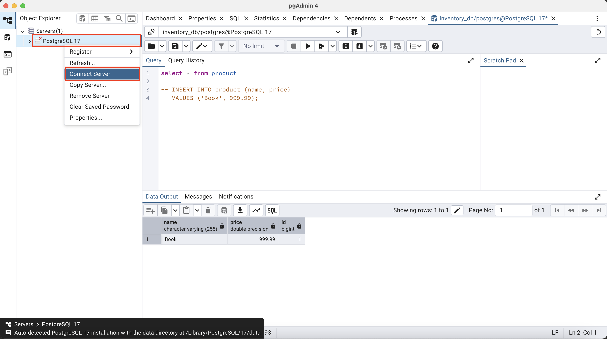
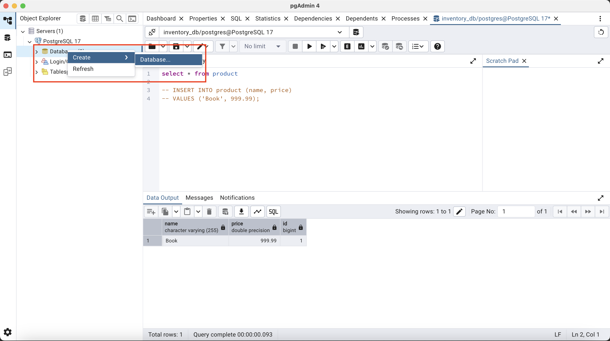
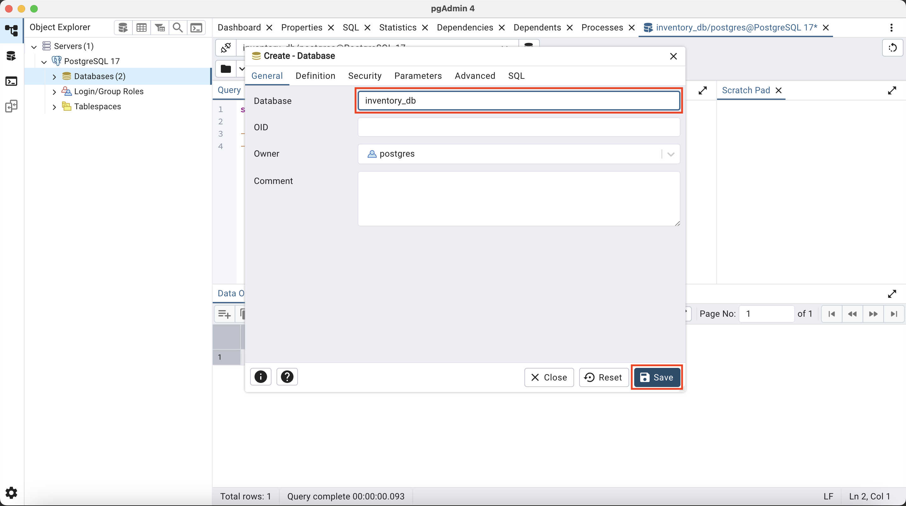
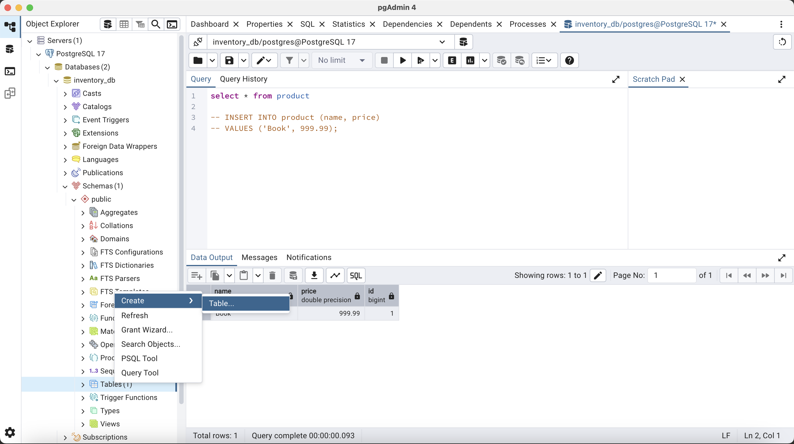
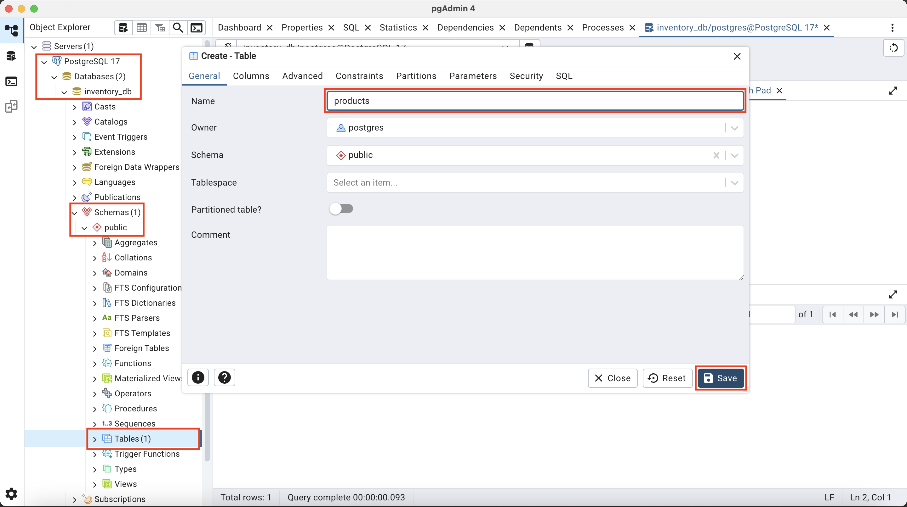
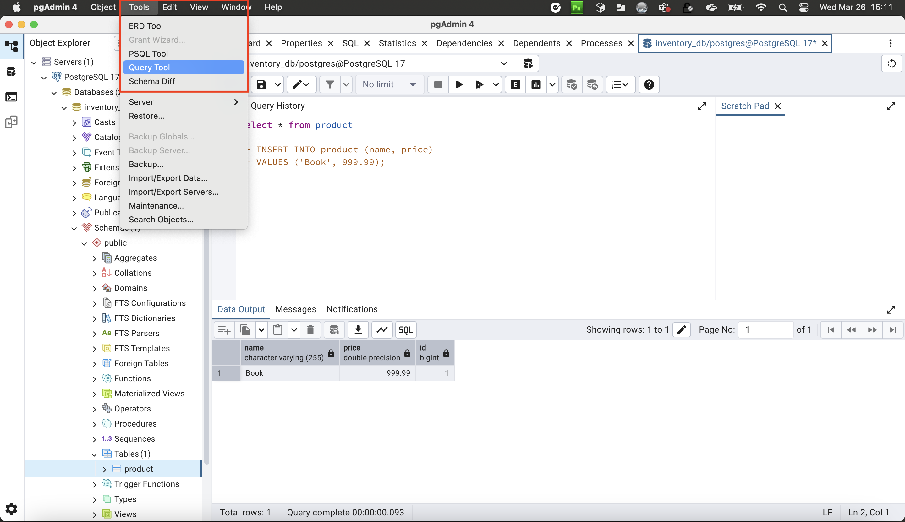
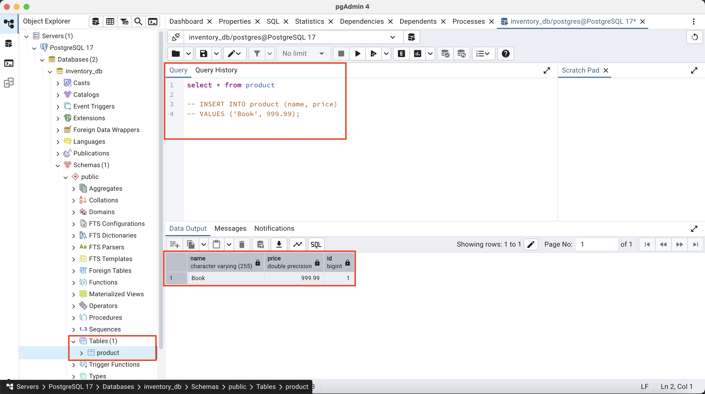

4. Integrated DB
4.1. Install the database (E.g: PostgreSQL)
- Step 1 -> Download PostgreSQL
- Step 2 -> Run
pgAdminand start the server  - Step 3 -> Create new database 
- Step 4 -> Enter
database nameandsave - Step 5 -> Right Clicks on
TablesthenCreate -> Table - Step 6 -> Add new
tablesto database (E.g: product)  - Step 7 -> Tables has been added then go to
Query Tool - Step 8 -> Enter your
Querythen executed 
4.2. Database configuration (E.g: PostgreSQL)
- Apply this configuration to
application.properties# JDBC URL for PostgreSQL spring.datasource.url=jdbc:postgresql://localhost:5432/inventory_db # PostgreSQL username and password spring.datasource.username=postgres spring.datasource.password=admin # Set the JPA dialect to PostgreSQL spring.jpa.properties.hibernate.dialect=org.hibernate.dialect.PostgreSQLDialect # Enable JPA/Hibernate automatic DDL (optional: update your database schema on app start) spring.jpa.hibernate.ddl-auto=update # Show SQL queries in the console (optional) spring.jpa.show-sql=true # Format SQL queries (optional) spring.jpa.properties.hibernate.format_sql=true
4.3. Dependencies (E.g: PostgreSQL)
- Add new dependencies to
pom.xml<dependency> <groupId>org.postgresql</groupId> <artifactId>postgresql</artifactId> <scope>runtime</scope> </dependency> <dependency> <groupId>org.springframework.boot</groupId> <artifactId>spring-boot-starter-data-jpa</artifactId> </dependency>
4.4. Connecting with the model
- Import packages
import jakarta.persistence.Entity; import jakarta.persistence.GeneratedValue; import jakarta.persistence.GenerationType; import jakarta.persistence.Id; import jakarta.persistence.Table; - How to use
@Entity&@Table, table name of the database (e.g: product)@Entity @Table(name="product") public class Product { } - Change
Idtoprimary keyand make itauto generate(! Important)public class Product { @Id @GeneratedValue(strategy = GenerationType.IDENTITY) private long id; } - Add constructor (! Important)
public class Product { public Product() { } // Other constructors or methods if necessary }
4.5. Connect with JPA Repository
- Step 1 -> Create Repository
package com.example.product.repository; import com.example.product.model.Product; import org.springframework.stereotype.Repository; @Repository public class ProductRepository { } - Step 2 -> JpaRepository Implementation
- Change class to interface and extends with
JpaRepositoryimport com.example.product.model.Product; import org.springframework.stereotype.Repository; import org.springframework.data.jpa.repository.JpaRepository; @Repository public interface ProductRepository extends JpaRepository<Product, Long> { // Other constructors or methods if necessary }
- Change class to interface and extends with
- Step 3 -> Some constructors will be automatically added to the repository
List<Product> findAll(String name); List<Product> findById(long id); - Step 4 -> Example Product Service
package com.example.product.service; import com.example.product.model.Product; import org.springframework.stereotype.Service; import com.example.product.repository.ProductRepository; import java.util.List; import java.util.Optional; @Service public class ProductService { private final ProductRepository productRepository; public ProductService(ProductRepository productRepository) { this.productRepository = productRepository; } public List<Product> getAllProducts() { return productRepository.findAll(); } public Optional<Product> findById(long id) { return productRepository.findById(id); } } - Step 5 -> Enabled
JpaRepository&Entityto RootApp (e.g: ProductApp.java)package com.example.product; import org.springframework.boot.SpringApplication; import org.springframework.boot.autoconfigure.SpringBootApplication; import org.springframework.boot.autoconfigure.domain.EntityScan; import org.springframework.data.jpa.repository.config.EnableJpaRepositories; @SpringBootApplication @EnableJpaRepositories("com.example.product.repository") @EntityScan("com.example.product.model") public class ProductApp { public static void main(String[] args) { SpringApplication.run(ProductApp.class, args); } }